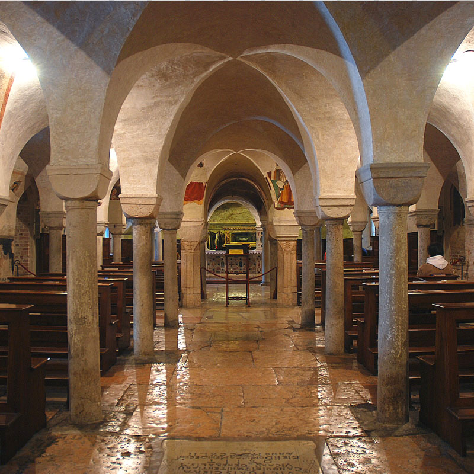
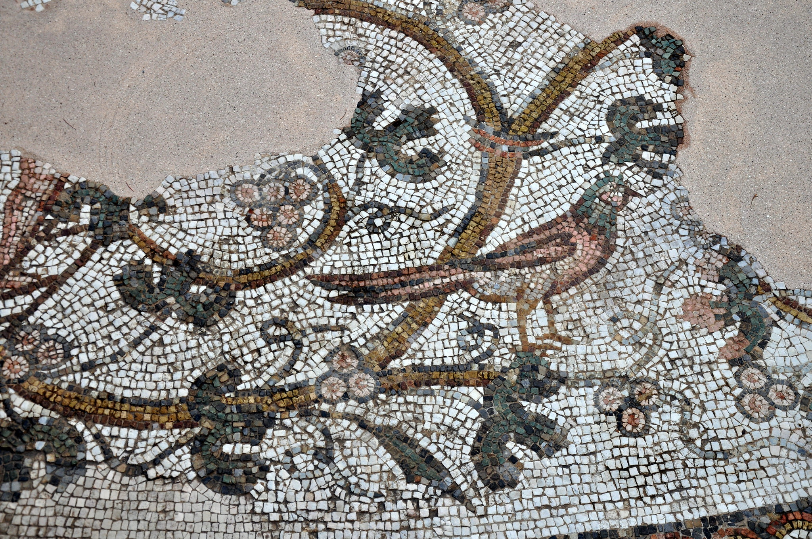
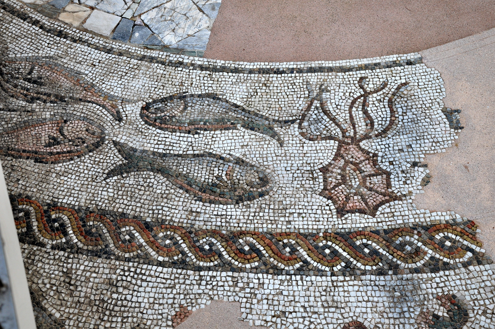

La cripta si trova sotto il presbiterio, a 2,5 metri rispetto al pavimento delle navate sovrastanti,
costituendo
le fondamenta del duomo. Vi si può accedere sia mediante due scale che si trovano a ovest delle navate,
situate
una a destra e una a sinistra della gradinata del presbiterio, sia attraverso una porta a sud che conduce
all’attuale Museo Diocesano, anticamente sede delle Canoniche Vecchie.
STRUTTURA INTERNA
La costruzione è suddivisa in 11 navatelle da 68 colonne che sorreggono volte a crociera senza costoloni.
Nella
parte a est termina con tre absidi: le due laterali, larghe 5 metri, sono inscritte nel muro, mentre quella
centrale, larga 10 metri, presenta delle sporgenze. In queste sono ben visibili i segni della ristrutturazione
dell’inizio del Cinquecento.
Tra le numerose colonne presenti, con capitelli di varie forme e dimensioni, si distinguono due gruppi
principali: il primo gruppo è costituito da colonne con capitelli a foglie d’Acanto stilizzate; si inseriscono
nell’insieme della scultura architettonica dell’Italia settentrionale che venne rivisitata e rielaborata dai
modelli antichi. Il secondo gruppo, invece, presenta colonne con capitelli a forma cubica caratteristici
dell’arte paleocristiana e Bizantina con capitelli a tronco di piramide rovesciato, in pietra o in marmo,
caratterizzati da degli angoli particolarmente smussati. Entrando più nel dettaglio si possono analizzare nove
colonne, risalenti al IX secolo, che sostengono capitelli corinzi a palmette, poste tra le prime tre file
rispetto alla porta sotto la cappella nell’Annunziata. Poi una, situata tra i due pilastri meridionali,
possiede
un capitello decorato a niello e due, situate all’entrata della cappella di S. Liberale, sono a base
ottagonale
in marmo rosso di Verona, formanti col capitello un blocco unico. Inoltre, unica nel suo genere, è la colonna
con capitello a forma di tronco tra i due pilastri meridionali, caratteristico dell’arte veneziana.
Davanti alla cappella di S. Liberale si possono osservare quattro pilastri in mattoni, 2 a destra e 2 a
sinistra, che interrompono il regolare procedere delle volte. Questo ci permette di ipotizzare che i pilastri
siano stati eretti con la finalità di sostenere le nuove murature sovrastanti, in relazione alla costruzione
della cupola del presbiterio realizzata durante i lavori settecenteschi. In questo modo i pilastri permettono
di
suddividere la cripta in 3 parti corrispondenti alle cappelle terminali:
La parte settentrionale, che termina con un’abside decorata con nicchie a sezione semicircolare, conservanti
l’antica struttura romanica. Al centro dell’abside si può scoprire una piccola apertura che condurrebbe ad una
volta a botte rivestita da affreschi appartenenti a due epoche diverse. Sulla parete d’ingresso troviamo il
ciclo della “Passione” della seconda metà del XIV secolo, gravemente danneggiato, e in un’altra parete della
stessa volta compare il “Padre Eterno”, risalente al XVI secolo. Questa situazione architettonica ci fa
dedurre
che all’originaria abside settentrionale fu aggiunta, probabilmente intorno al Trecento, una cappella, poi
alterata durante i lavori del Cinquecento. A confermare tale teoria ci sono le rilevazioni delle spese per la
demolizione dell’antica cappella sinistra del coro, venuta alla luce durante la costruzione della cappella
dedicata al Santissimo Sacramento nel 1501.
La parte centrale che termina nella cappella di S. Liberale, è divisa in 5 navate da 4 file di 9 colonne.
Questa
sezione si separa dalla parte settentrionale grazie alla presenza del muro portante, nel quale si possono
notare
dei frammenti dell’antica muratura.
Qui si trova una particolare pavimentazione costituita da lastre di marmo, tra le quali si vedono frammenti di
mosaico. Tra questi alcuni presentano rappresentazioni di animali e vegetali in opus tessellatum, altri
raffigurano motivi geometrici in opus sectile e altri ancora (quelli più vicini alle colonne) sono semplici
tessere bianche inframezzate da qualche tessera nera senza figurazioni. Osservando la disposizione di questi
frammenti e l’accostamento a collage di alcuni di essi, si può intuire che la loro posizione originale non
fosse
sempre stata quella e che in origine il pavimento della cripta fosse rivestito da un mosaico, successivamente
assai rimaneggiato. I vari motivi di questi frammenti si ricollegano all’ambiente lagunare per l’utilizzo
congiunto, tipicamente bizantino, di sectile e tessellatum e per la presenza di motivi tardo antichi accanto a
figure come il dragone alato, che risale ai mosaici lagunari del XII secolo.
La parte meridionale che è divisa in tre navate da due file di sei colonne che poggiano su un pavimento non
lastricato e terminano nella cappella absidata dedicata alla Madonna di Loreto, coperta da una volta a botte e
rivestita di stucchi di gusto settecentesco. Sul muro meridionale una porta conduce alla piccola sacrestia,
dove
si vede un tratto di muratura a grossi blocchi di pietra irregolari e sporgenti lungo tutta la parete
d’entrata,
scoperti nei lavori di restauro del dopoguerra. Tratti di questa muratura si possono intercettare anche nella
parete esterna, a sinistra della porta che conduce al Museo Diocesano.
Descrizione della Cappella di S.Liberale
Sulle pareti laterali della cappella dedicata a San Liberale troviamo delle decorazioni a palmette sia a
niello,
sia scolpite in rilievo e, inoltre, due nicchie a sezione semicircolare. Di queste ultime, quella situata a
destra è rivestita dall’affresco raffigurante San Cristoforo, ormai deteriorato soprattutto nell’angolo in
basso
a sinistra, mentre quella nella parte opposta è ricoperta nella porzione superiore da un frammento di un
affresco con la Madonna e il Bambino insieme a Paolo e Pietro; nella parte inferiore, è invece riconoscibile
l’originale muro. A destra, dove si trova un arco, si nota la traccia di una ghiera in mattoni che
probabilmente
circondava il perimetro della nicchia. Essa si presenta leggermente tagliata dalla volta in alto a sinistra,
confermando la presenza di interventi successivi alla costruzione della cripta.
Proseguendo all’interno si riscontrano quattro frammenti di cornice a destra e quattro a sinistra su cui
poggiano le volte. Hanno misure e decorazioni diverse e la loro attuale collocazione non è quella originale in
quanto sono sconnesse tra di loro.
Verso l’abside, e quindi verso la fine della cappella, si notano dei cambiamenti sia nella copertura, sia
nella
pavimentazione, che nei sostegni. Queste variazioni evidenziano anche qui delle manomissioni successive al
periodo di costruzione. Infatti le ultime 4 colonne in fila sono rinascimentali e sottolineano il passaggio da
una pavimentazione a grosse lastre di marmo ad una liscia. Qui terminano anche gli affreschi sulle volte
raffiguranti angeli e databili intorno al tardo XV secolo. Le volte a crociera, invece, continuano fino
all’altare di San Liberale e alle due colonne che lo affiancano, dove comincia una volta a botte che si
estende
per circa 2,5 metri, seguita da un’abside rinascimentale.
STRUTTURA ESTERNA
All’esterno, sulla parte nord, poco prima della cappella settentrionale, dedicata al Santissimo Sacramento, è
visibile un tratto dell’antica muratura romanica in mattoni, lunga 11,5 metri e alto 10,5 metri. Si presenta
decorato da due coppie di arcate cieche e dall’inizio di una terza verso est, divise da tre lesene. In basso
si
aprono cinque finestre e sotto si vede un basamento di grossi blocchi di pietra di varie misure. Il tratto di
muro visibile fu restaurato, essendo stato scoperto a seguito del bombardamento del 7 aprile 1944.
Nell’angolo esterno meridionale, tra la cappella dedicata alla Madonna di Loreto e un piccolo vano adiacente
adibito a sacrestia, si riscontra un basamento a grossi blocchi di pietra, simile a quello lungo il lato nord
e
circa allo stesso livello. Sporge di circa 30 centimetri e percorre tutta la parte superiore lungo il tratto
di
muro sovrastante, intonacato a mattone pesto, fino all’oculo della cappella dell’Annunziata, ovvero quella al
termine della navata destra e sulla sinistra dell'altare maggiore.



